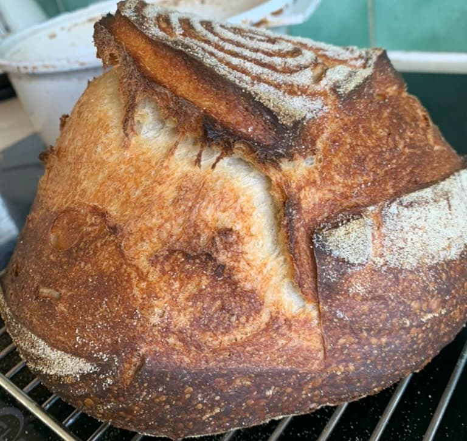

Sourdough

Baked Sourdough
A basic white sourdough, with just four ingredients:
Ingredients:
- Flour: 600 g
- Water: 380 g, 36 degrees Celsius
- Salt: 12 g
- Sourdough starter (natural yeast): 30 g
Steps
- Mix flour and water and let rest for 20 minutes
- Add the salt and sourdough starter to the mix and use the "pincer" method
- Let rest for 10 minutes
- Every 10 minutes "fold" the dough, and let rest, repeating four times
- Let proof overnight
- After about 8 - 10 hours, the dough should be ready to be shaped
- Take the dough out of the bowl on to a lightly dusted counter, and shape into a round
- Dust the banaton and once shaped, place the dough into it, bottom side down
- Let proof for another 2 - 4 hours, 40 minutes before it's ready, heat oven to 250 degrees Celsius
- Carefully take the dough out of the banaton and place on a dusted tray ready to put into the over
- Score the bread with your knife
- Place in the oven, reduce temperature to 210 degrees Celsius
- Set timer for 30 minutes, to check the bread
- After the 30 minutes, check and turn if required, determine how much longer is required (5 - 15 extra minutes)
- Once ready, take out of the oven and let cool on a rack
Back Home